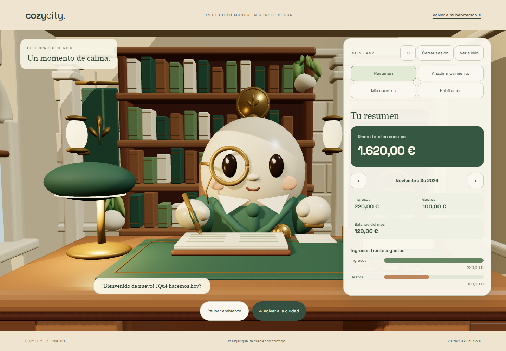
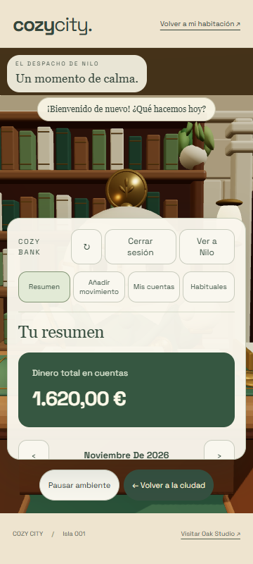
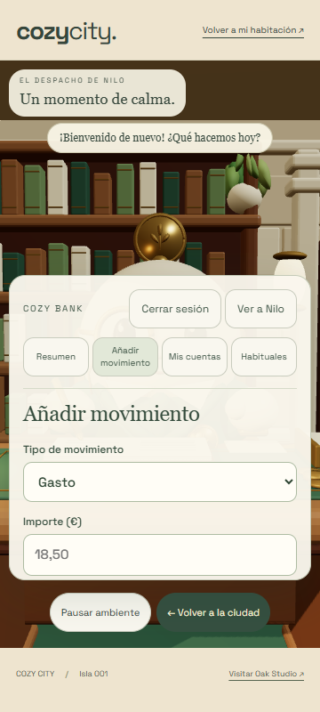

← Abrir Cozy CityTu banco, en el despacho de Nilo.
Integración real con Supabase · Verificación del 1 de noviembre de 2026.

Resumen con saldo derivado de movimientos reales. El panel deja visible a Nilo.Decisiones mensuales persistentes: confirmar, posponer u omitir.
Panel móvil desplazable.
Formulario HTML accesible sobre la escena.El panel se puede minimizar para ver a Nilo.Resultados: interfaz principal · ingresos y recurrencias · recuperación Auth · correo real · regresión 3D.